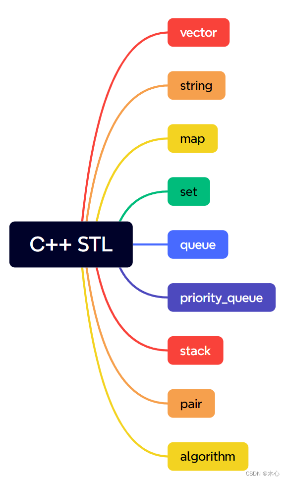

简介 C++ STL（standard template library）标准模板库，是一套强大的C++模板类，提供了通用了模板类和函数，这些模板类和函数可以实现多种流行和常用的算法和数据结构，如向量vector，队列deque，和映射map等。
C++ 标准模板库的核心包括以下三个组件：
组件
描述
容器（Containers）
容器是用来管理某一类对象的集合。C++ 提供了各种不同类型的容器，比如 deque、list、vector、map 等。
算法（Algorithms）
算法作用于容器。它们提供了执行各种操作的方式，包括对容器内容执行初始化、排序、搜索和转换等操作。
迭代器（iterators）
迭代器用于遍历对象集合的元素。这些集合可能是容器，也可能是容器的子集。
这三个组件都带有丰富的预定义函数，帮助我们通过简单的方式处理复杂的任务。

vector std::vector（向量），是一种变长数组，类似于python中的list，是一种可以“自动改变数组长度的数组”。在要使用std::vector的时候，我们需要添加头文件
1 2 #inlcude <vector> using namespace std;
定义 可以像定义普通变量一样来定义vector变量：
可以是各种类型，也同样可以是STL容器，举个例子，
1 2 3 4 std::vector<int > my_vector; std::vector<double > my_vector; std::vector<char > my_vector; std::vector<vector<int >> my_vector;
初始化 vector容器可以使用C中的初始化器 {}来进行初始化，vector容器也可以使用构造函数 ()来进行初始化
1 2 3 std::vector<int > my_vector; std::vector<int > my_vector (5 , 10 ) ; std::vector<int > my_vector {1 , 2 , 3 , 4 , 5 }
元素访问 通过下标[i]访问
1 2 3 4 5 6 7 8 9 #include <iostream> #include <vector> using namespace std;int main () std::vector<int > my_vector (4 , 1 ) ; cout << my_vector[1 ] << endl; return 0 ; }
通过迭代器（iterator）访问
迭代器可以理解为指针
1 std::vector<类型名>::iterator 变量名;
迭代器可以这样声明
1 2 std::vector<int >::iterator it; std::vector<double >::iterator it;
举个例子
1 2 3 4 5 6 7 8 9 10 11 12 13 14 15 16 17 #include <iostream> #include <vector> using namespace std;int main () std::vector<int > my_vector; for (int i = 0 ; i < 5 ; i++) { my_vector.push_back (i+1 ); } std::vector<int >::iterator it = my_vector.begin (); for (int i = 0 ; i < my_vector.size (); i++) { cout << it[i] << endl; } return 0 ; }
可以将for循环读取部分简写为
1 2 3 for (std::vector<int >::iterator it = my_vector.begin (); it != my_vector.end (); it++) { cout << *it << " " ; }
常用函数 push_back()，在vector的末尾添加元素，类似python中list.append()方法emplace_back()，在vector的末尾添加元素（C++11特性）pop_back()，删除vector末尾的元素，类似python中list.pop()方法，但是没有返回值size()，返回vector的长度，类似python中的len(list)clear()，清空vector中的所有元素insert()，在指定的地址插入元素back()，访问vector中的最后一个元素front()，访问vector中的首元erase()，删除指定地址的元素
push_back
1 void std::vector<int >::push_back (const int &__x)
举例：
1 2 3 4 5 6 7 8 9 10 11 12 13 14 15 16 #include <iostream> #include <vector> using namespace std;int main () std::vector<int > v; for (int i = 0 ; i < 10 ; i++) { v.push_back (i + 1 ); } for (vector<int >::iterator it = v.begin (); it < v.end (); it++) { cout << *it << " " ; } return 0 ; }
pop_back
1 void std::vector<int >::pop_back ()
举例：
1 2 3 4 5 6 7 8 9 10 11 12 13 14 15 16 17 18 19 20 21 22 #include <iostream> #include <vector> using namespace std;int main () std::vector<int > v; for (int i = 0 ; i < 10 ; i++) { v.push_back (i + 1 ); } for (vector<int >::iterator it = v.begin (); it < v.end (); it++) { cout << *it << " " ; } for (int i = 0 ; i < 5 ; i++) { v.pop_back (); } cout << endl; for (vector<int >::iterator it = v.begin (); it < v.end (); it++) { cout << *it << " " ; } return 0 ; }
size
1 std::size_t std::vector<int >::size ()
举例：
1 2 3 4 5 6 7 8 9 int main () std::vector<int > v; for (int i = 0 ; i < 10 ; i++) { v.push_back (i + 1 ); } cout << "Length of the vector is " << v.size (); return 0 ; }
clear
举例
1 2 3 4 5 6 7 8 9 10 11 12 13 14 15 16 17 18 19 #include <iostream> #include <vector> using namespace std;int main () std::vector<int > v; for (int i = 0 ; i < 10 ; i++) { v.push_back (i + 1 ); } for (int i = 0 ; i < v.size (); i++) { cout << v[i] << " " ; } cout << endl; cout << "Length of vector is " << v.size () << endl; v.clear (); cout << "Length of vector is " << v.size (); return 0 ; }
insert
1 2 3 4 5 insert (__position, __x); 参数： __position: - A const_iterator into the vector. __x: - Data to be inserted.
举例：
1 2 3 4 5 6 7 8 9 10 11 12 13 14 15 16 17 18 19 20 21 22 23 24 25 26 27 28 29 30 #include <iostream> #include <vector> using namespace std;int main () std::vector<int > myVector = { 1 , 2 , 3 , 4 , 5 }; for (int i = 0 ; i < myVector.size (); i++) { cout << myVector[i] << " " ; } cout << endl; myVector.insert (myVector.begin (), -1 ); for (int i = 0 ; i < myVector.size (); i++) { cout << myVector[i] << " " ; } cout << endl; myVector.insert (myVector.begin () + 1 , { -1 , -1 }); for (int i = 0 ; i < myVector.size (); i++) { cout << myVector[i] << " " ; } cout << endl; std::vector<int > antherVector = { -1 , -1 , -1 }; myVector.insert (myVector.end (), antherVector.begin (), antherVector.end ()); for (int i = 0 ; i < myVector.size (); i++) { cout << myVector[i] << " " ; } cout << endl; return 0 ; }
erase
1 2 3 4 erase (__position); 参数： __position: - A const_iterator into the vector.
指定删除的区间的时候，这个区间是左闭右闭的。
举例：
1 2 3 4 5 6 7 8 9 10 11 12 13 14 15 16 17 18 19 20 21 22 23 #include <iostream> #include <vector> using namespace std;int main () std::vector<int > v = { 1 , 2 , 3 , 4 , 5 }; for (int i = 0 ; i < v.size (); i++) { cout << v[i] << " " ; } cout << endl; v.erase (v.begin () + 1 ); for (int i = 0 ; i < v.size (); i++) { cout << v[i] << " " ; } cout << endl; v.erase (v.begin () + 1 , v.end () - 1 ); for (int i = 0 ; i < v.size (); i++) { cout << v[i] << " " ; } cout << endl; return 0 ; }
string std::string（字符串），是C++标准库中用于表示和字符串的类，它提供了许多成员函数和操作符，用于处理字符串的各种操作，非常类似于Python中的str数据类型，当我们使用std::string的时候，我们需要提前包含头文件：
1 2 #include <string> using namespace std;
定义 std::string可以像普通类型一样进行定义
初始化 std::string可以直接使用字符串字面量来进行初始化，或者使用另一个字符串变量来进行初始化，例如：
1 2 std::string str1 = "Hello, World!" ; std::string str2 = str1;
举例：
1 2 3 4 5 6 7 8 9 10 11 #include <iostream> #include <string> using namespace std;int main () std::string str1 = "Hello World!" ; std::string str2 = str1; cout << str1 << endl << str2; return 0 ; }
元素访问 std::string有两种访问和修改字符的方式，std::string和Python中str数据类型的不同点在于，Python str类型不支持原地修改，而std::string支持，str类型支持切片操作，但是std::string不支持切片操作，可以使用std::string::substr()方法来代替。
通过下标访问
1 2 3 4 5 6 7 8 9 10 11 12 #include <iostream> #include <string> using namespace std;int main () string str = "Hello World!" ; cout << str << endl; cout << str[0 ] << endl; str[0 ] = 'C' ; cout << str; return 0 ; }
使用at进行元素访问
1 2 3 4 5 6 7 8 9 10 11 12 13 #include <iostream> #include <string> using namespace std;int main () std::string str = "Hello World!" ; cout << str << endl; cout << str.at (0 ) << endl; str.at (0 ) = 'C' ; cout << str; return 0 ; }
遍历 range-based for循环遍历
1 2 3 4 5 6 7 8 9 10 11 #include <iostream> #include <string> using namespace std;int main () string s = "Hello, World!" ; for (char ch : s) { cout << ch << " " ; } return 0 ; }
使用迭代器遍历
1 2 3 4 5 6 7 8 9 10 11 #include <iostream> #include <string> using namespace std;int main () string s = "Hello, World!" ; for (string::iterator it = s.begin (); it != s.end (); it++) { cout << *it << " " ; } return 0 ; }
使用下标遍历
1 2 3 4 5 6 7 8 9 10 11 #include <iostream> #include <string> using namespace std;int main () string s = "Hello, World!" ; for (int i = 0 ; i < s.size (); i++) { cout << s[i] << " " ; } return 0 ; }
连接字符串 std::string可以像Python中str一样进行使用+进行拼接，使用append()方法在末尾添加字符。
使用+进行拼接，+会返回一个新的字符串
1 2 3 4 5 6 7 8 9 10 11 12 13 #include <iostream> #include <string> using namespace std;int main () string str1 = "Hello" ; cout << str1 << endl; string str2 = " World!" ; cout << str2 << endl; cout << str1 + str2; return 0 ; }
使用append()进行拼接，在原字符串的基础上进行添加
1 2 3 4 5 6 7 8 9 10 11 12 13 14 #include <iostream> #include <string> using namespace std;int main () string str1 = "Hello" ; cout << str1 << endl; string str2 = " World!" ; cout << str2 << endl; str1. append (str2); cout << str1; return 0 ; }
常用函数 length()获取字符串的长度，size()获取字符串的长度，substr()，获取字符串的子串，第一个参数是索引，第二个参数是子串的长度find()查找子串的位置resize()，直接调整string的长度stoi()，将单个字符串转换成int类型stoll()，将单个字符串转换成long long类型push_back()，将单个字符拼接在末尾pop_back()，弹出末尾的字符
length()和size()
1 2 size_t std::string::length () const ; size_t std::string::size () const ;
举例：
1 2 3 4 5 6 7 8 9 10 #include <iostream> #include <string> using namespace std;int main () std::string str = "Hello World!" ; cout << str.length () << " " << str.size (); return 0 ; }
substr()
1 std::string std::string::substr (size_t __pos, size_t __count) const ;
substr()是用于获得子串的函数，第一个位置是索引，第二个位置是子串的长度。
举例：
1 2 3 4 5 6 7 8 9 10 11 #include <iostream> #include <string> using namespace std;int main () std::string str = "Hello World!" ; cout << str << endl; cout << str.substr (0 , 4 ); return 0 ; }
find()
1 size_t std::string::find (const std::string& __str, size_t __pos = 0 ) const ;
find()是用于查找子串的位置，返回子串首元出现在母船中的位置。
举例：
1 2 3 4 5 6 7 8 9 10 11 #include <iostream> #include <string> using namespace std;int main () std::string str = "Hello World!" ; std::string substr = "orld" ; cout << str.find (substr) << endl; return 0 ; }
map std::map是一种键值对容器，在python中这种容器被称为字典dict，在std::map中数据都是成对出现的，每一对中的第一个值被称为关键字key，每个关键字只能在std::map中出现一次，第二个称之为关键的对应值。在使用std::map之前，我们需要包含头文件
1 2 #inlcude <map> using namespace std;
定义 std::map是一个模板类，需要的关键字和存储对象两个模板参数，定义如下：
1 std::map<关键字的类型名, 存储对象的类型名> 变量名;
类型名可以是各种类型，例如：
1 2 std::map<string, int > person; std::map<int , int > mydict;
初始化 std::map可以使用初始化列表{}来进行初始化，例如：
1 std::map<string, int > myMap = { { "One" , 1 }, {"Two" , 2 }, {"Three" , 3 } };
遍历 std::map 并不直接支持使用下标进行遍历，因为它是一种按键排序的关联容器，而不是顺序容器。使用下标遍历会导致元素的顺序混乱，不符合 std::map 的特性。
使用迭代器遍历
举个例子，初始化一个std::map然后使用iterator遍历其中的键值对（key-value pair）
1 2 3 4 5 6 7 8 9 10 11 12 #include <iostream> #include <string> #include <map> using namespace std;int main () std::map<string, int > myMap = { { "One" , 1 }, {"Two" , 2 }, {"Three" , 3 } }; for (std::map<string, int >::iterator it = myMap.begin (); it != myMap.end (); it++ ) { cout << "Key: " << it->first << "\tValue: " << it->second << endl; } return 0 ; }
在上述示例中，我们使用 myMap.begin() 获取指向第一个键值对的迭代器，使用 myMap.end() 获取指向最后一个键值对后面位置的迭代器。然后，通过迭代器遍历 std::map 中的键值对，并使用 it->first 获取键，it->second 获取值。
上述代码我们在指定迭代器的时候，手动去指定迭代器的类型，这样十分的麻烦，我们可以使用auto关键字来自动生成符合条件的迭代器，例如：
1 2 3 4 5 6 7 8 9 10 11 12 13 #include <iostream> #include <string> #include <map> using namespace std;int main () std::map<string, int > myMap = { { "One" , 1 }, {"Two" , 2 }, {"Three" , 3 } }; for (auto it = myMap.begin (); it != myMap.end (); it++ ) { cout << "Key: " << it->first << "\tValue: " << it->second << endl; } return 0 ; }
使用范围循环遍历
举个例子，初始化一个std::map然后使用std::pair遍历其中的键值对（key-value pair）
1 2 3 4 5 6 7 8 9 10 11 12 13 #include <iostream> #include <string> #include <map> using namespace std;int main () std::map<string, int > myMap = { { "One" , 1 }, {"Two" , 2 }, {"Three" , 3 } }; for (const std::pair<string, int >& pair : myMap) { cout << "Key: " << pair.first << "\tValue: " << pair.second << endl; } return 0 ; }
同样我们也能使用关键字auto来自动推导类型
1 2 3 4 5 6 7 8 9 10 11 12 13 #include <iostream> #include <string> #include <map> using namespace std;int main () std::map<string, int > myMap = { { "One" , 1 }, {"Two" , 2 }, {"Three" , 3 } }; for (auto & pair : myMap) { cout << "Key: " << pair.first << "\tValue: " << pair.second << endl; } return 0 ; }
元素访问 可以使用[]来访问并修改std::map中的元素，就类似于Python的dict一样，举个例子
1 2 3 4 5 6 7 8 9 10 11 12 13 14 #include <iostream> #include <string> #include <map> using namespace std;int main () std::map<string, int > myMap = { { "One" , 1 }, {"Two" , 2 }, {"Three" , 3 } }; myMap["One" ] = 10 ; for (auto & pair : myMap) { cout << "Key: " << pair.first << "\tValue: " << pair.second << endl; } return 0 ; }
常用函数 insert()，向map中插入一个键值对，erase()，删除指定键的键值对find()，查找指定键的迭代器count()，返回指定键在map中的出现次数size()，返回map的长度empty()，检查map是否为空clear()，清空map中的所有键值对beign()，返回指向第一个键值对的迭代器end()，返回指向最后一个键值对的迭代器
insert()
1 void std::map<Key, T, Compare, Allocator>::insert (const std::pair<const Key, T>& __x)
std::map<Key, T, Compare, Allocator> 表示 std::map 的模板参数，其中 Key 是键的类型，T 是值的类型，Compare 是用于比较键的比较函数类型，Allocator 是分配器的类型。
而 insert() 函数的原型部分 const std::pair<const Key, T>& __x 表示参数 __x 是一个常量引用，类型为 std::pair<const Key, T>，即键值对的类型。
举个例子：
1 2 3 4 5 6 7 8 9 10 11 12 13 14 15 16 17 18 19 20 #include <iostream> #include <string> #include <map> using namespace std;int main () std::map<string, int > myMap = { { "One" , 1 }, {"Two" , 2 }, {"Three" , 3 } }; for (auto & pair : myMap) { cout << "Key: " << pair.first << "\tValue: " << pair.second << endl; } cout << endl; myMap.insert ({ "Four" , 4 }); myMap.insert (pair <string, int >("Five" , 5 )); myMap.insert (make_pair ("Six" , 6 )); for (auto & pair : myMap) { cout << "Key: " << pair.first << "\tValue: " << pair.second << endl; } return 0 ; }
erase()
1 void std::map<Key, T, Compare, Allocator>::erase (const Key& __x)
std::map<Key, T, Compare, Allocator> 表示 std::map 的模板参数，其中 Key 是键的类型，T 是值的类型，Compare 是用于比较键的比较函数类型，Allocator 是分配器的类型。
而 erase() 函数的原型部分 const Key& __x 表示参数 __x 是一个常量引用，类型为 Key，即要删除的键的类型。
举例：
1 2 3 4 5 6 7 8 9 10 11 12 13 14 15 16 17 18 19 20 21 22 23 24 25 26 27 #include <iostream> #include <string> #include <map> using namespace std;int main () std::map<string, int > myMap = { { "One" , 1 }, {"Two" , 2 }, {"Three" , 3 }, { "Four" , 4 }, {"Five" , 5 } }; for (auto & pair : myMap) { cout << "Key: " << pair.first << "\tValue: " << pair.second << endl; } cout << endl; myMap.erase ("Two" ); auto it = myMap.find ("Three" ); if (it != myMap.end ()) { myMap.erase (it); } auto start = myMap.find ("Five" ); auto end = myMap.find ("Four" ); myMap.erase (start, end); for (auto & pair : myMap) { cout << "Key: " << pair.first << "\tValue: " << pair.second << endl; } return 0 ; }
pair std::pair是C++标准库中的模板类，用于表示两个值的有序对，它可以存储不同类型的值，并提供了一些成员函数和操作符来访问和操作这两个值，在使用std::pair之前，我们需要导入头文件
1 2 3 #include <utility> #include <iostream>
定义和初始化 使用构造函数进行初始化
1 2 3 4 5 6 7 std::pair <int , std::string> myPair (42 , "Hello" ); ``` **使用初始化器`{}`来初始化** ```cpp std::pair <int , std::string> myPair = {42 , "Hello" };
使用make_pair函数进行初始化
1 auto myPair = std::make_pair (42 , "Hello" );
元素访问 使用.来访问std::pair中的值，std::pair 的第一个值可以通过 pair.first 访问，第二个值可以通过 pair.second 访问。需要注意的是，std::pair 是一个简单的容器，只包含两个值，没有提供像容器类（如 std::vector 或 std::map）那样的迭代器和成员函数。使用 std::pair 主要是为了方便地存储和传递两个相关的值。
1 2 3 4 std::pair<int , int > pair1 (1 , 2 ) ;std::pair<int , int > pair2 (3 , 4 ) ;cout << pair1.f irst << endl; pair2. second = 5 ;
元素比较 举例：
1 2 3 4 5 6 7 8 9 10 11 12 13 #include <iostream> using namespace std;int main () std::pair<int , int > pair1 (1 , 2 ) ; std::pair<int , int > pair2 (3 , 4 ) ; bool isEqual = (pair1 == pair2); bool isNotEqual = (pair1 != pair2); bool isLess = (pair1 < pair2); bool isGreater = (pair1 > pair2); cout << isEqual << " " << isNotEqual << " " << isLess << " " << isGreater; }
set std::set是C++标准库中的容器类，用于存储唯一且自动排序的元素集合，类似于Python中的set。要使用std::set，我们需要包含以下头文件
定义 set是一个模板类，需要的一个模板参数，定义如下：
类型名可以是各种类型，例如：
1 2 std::set<int > mySet; std::set<string> mySet;
初始化 使用初始化列表来初始化
1 std::set<int > mySet = {1 , 2 , 3 };
使用迭代器范围初始化
1 2 std::vector<int > vec = {1 , 2 , 3 }; std::set<int > mySet (vec.begin(), vec.end()) ;
使用另一个std::set进行初始化
1 2 std::set<int > sourceSet = {1 , 2 , 3 }; std::set<int > mySet (sourceSet) ;
插入与删除 std::set中有关插入与修删除的函数分别是：
insert()，插入一个元素erase()，删除一个元素
插入元素的示例：
1 2 3 4 5 6 7 8 9 10 11 12 13 14 15 16 #include <iostream> #include <set> int main () std::set<int > mySet = { 1 , 2 , 3 }; for (auto it = mySet.begin (); it != mySet.end (); it++) { std::cout << *it << " " ; } mySet.insert (10 ); std::cout << std::endl; for (auto it = mySet.begin (); it != mySet.end (); it++) { std::cout << *it << " " ; } return 0 ; }
删除元素的示例：
1 2 3 4 5 6 7 8 9 10 11 12 13 14 15 16 #include <iostream> #include <set> int main () std::set<int > mySet = { 1 , 2 , 3 }; for (auto it = mySet.begin (); it != mySet.end (); it++) { std::cout << *it << " " ; } mySet.erase (1 ); std::cout << std::endl; for (auto it = mySet.begin (); it != mySet.end (); it++) { std::cout << *it << " " ; } return 0 ; }
遍历 在C++标准库中std::set是基于红黑树实现的关联容器，其中元素按照特定的排序顺序规则进行存储和访问，所以std::set不支持使用[]通过下标来进行访问，对于std::set要访问其中的元素，我们可以使用迭代器 或者范围-based for循环 来访问
使用迭代器来遍历访问
1 2 3 4 5 6 7 8 9 10 11 12 13 14 #include <iostream> #include <set> int main () std::set<int > mySet = { 1 , 2 , 3 }; for (std::set<int >::iterator it = mySet.begin (); it != mySet.end (); it++) { std::cout << *it << " " ; } std::cout << std::endl; for (auto it = mySet.begin (); it != mySet.end (); it++) { std::cout << *it << " " ; } return 0 ; }
使用范围-based for循环来遍历访问
1 2 3 4 5 6 7 8 9 10 11 12 13 14 #include <iostream> #include <set> int main () std::set<int > mySet = { 1 , 2 , 3 }; for (const int & value : mySet) { std::cout << value << " " ; } std::cout << std::endl; for (const auto & value : mySet) { std::cout << value << " " ; } }
常用函数
count()，返回指定键在set中的出现次数find()，查找指定值的迭代器size()，获取元素的数量empty()，判断set是否为空clear()，清空set
count()
std::set::count()会返回查找元素在容器中的次数，这里是std::set，不允许有重复的元素，所以如果查找到元素的话就返回1，没有查找到元素就返回0。
举例：
1 2 3 4 5 6 7 8 9 10 11 12 #include <iostream> #include <set> int main () std::set<int > mySet = { 1 , 2 , 3 }; if (mySet.count (1 ) != 0 ) { std::cout << "找到元素" ; } else { std::cout << "未找到元素为" ; } }
find()
std::set::find()会返回查找元素的迭代器，如果没找到，则遍历到std::set::end()
举例：
1 2 3 4 5 6 7 8 9 10 11 12 13 14 15 #include <iostream> #include <set> int main () std::set<int > mySet = { 1 , 2 , 3 }; auto it = mySet.find (5 ); if (it == mySet.end ()) { std::cout << "遍历到末尾未找到元素" << std::endl; } else { std::cout << "找到元素为:" << *it << std::endl; } }
stack 在C++中，std::stack是一个容器适配器，它基于其他容器实现了栈的功能，栈是一种先进后出（first int last out， FILO）的数据结构，要使用std::stack我们得先包含头文件：
初始化 std::stack的使用过程中一般使用默认初始化，即不给std::stack赋值，std::stack不支持使用花括号初始化器{}来进行初始化，但是std::stack可以使用其他容器来进行初始化，比如std::deque，这种初始化方式会调用适当的构建函数来构建栈对象。
1 2 3 4 5 6 7 8 9 10 11 12 13 14 #include <iostream> #include <stack> #include <deque> int main () std::deque<int > myDeque = { 1 , 2 , 3 , 4 , 5 }; std::stack<int > myStack (myDeque) ; while (!myStack.empty ()) { std::cout << myStack.top () << " " ; myStack.pop (); } return 0 ; }
1 2 3 4 5 6 7 8 9 10 11 #include <iostream> #include <stack> int main () std::stack<int > myStack ({ 1 , 2 , 3 , 4 , 5 }) ; while (!myStack.empty ()) { std::cout << myStack.top () << " " ; myStack.pop (); } return 0 ; }
常用函数
push()，向栈顶添加元素pop()，弹出栈顶元素，请注意无返回值top()，访问栈顶元素empty()，判断栈是否为空size()，获取栈中元素的数量
举例：
1 2 3 4 5 6 7 8 9 10 11 12 13 14 15 16 17 18 19 #include <iostream> #include <stack> int main () std::stack<int > myStack; for (int i = 0 ; i < 10 ; i++) { myStack.push (i + 1 ); } std::cout << "栈顶元素为: " << myStack.top () << std::endl; std::cout << "弹出元素" << std::endl; myStack.pop (); myStack.pop (); std::cout << "栈中元素个数为: " << myStack.size () << std::endl; std::cout << "栈是否为空: " << myStack.empty () << std::endl; return 0 ; }
queue 在C++标准库中，std::queue是一个容器适配器，它提供了队列的功能queue，队列是一种先进先出（first in first out）的数据结构，std::queue通过封装std:deque来实现队列操作，使用std::queue需要包含头文件：
初始化 std::queue可以使用默认初始化
1 std::queue<int > myQueue;
std::queue也可以使用花括号初始化器{}来进行初始化
1 std::queue<int > myQueue = {1 , 2 , 3 , 4 , 5 };
常用函数
push()，在队尾添加元素front()，访问队首元素back()，访问队尾元素pop()，移除队首元素，无返回值empty()，检查是否为空size()，返回队列中元素数量
举例：
1 2 3 4 5 6 7 8 9 10 11 12 13 14 15 #include <iostream> #include <queue> int main () std::queue<int > myQueue; myQueue.push (1 ); myQueue.push (2 ); myQueue.push (3 ); std::cout << "当前队首元素为: " << myQueue.front () << std::endl; myQueue.pop (); std::cout << "当前队列中的元素数量为: " << myQueue.size () << std::endl; std::cout << "当前队列是否为空: " << myQueue.empty () << std::endl; return 0 ; }
priority_queue Cpp的标准库中std::priority_queue是一个模板类，用于实现优先级队列，其中的元素按照一定的优先级顺序进行排列，默认情况下，std::priority_queue使用大顶堆进行排序（即最大的元素优先）。使用std::priority_queue需要先包含头文件
基本用法 1.定义元素类型：确定要存储在优先级队列中的元素类型。该类型必须支持比较操作符（<），以便进行元素的排序。
1 2 3 4 5 struct MyElement { int priority; std::string name; };
2.定义比较函数或使用自定义比较器（可选）：如果您的元素类型不是内置类型或没有默认的 < 操作符，您需要定义一个比较函数或使用自定义的比较器类来指定元素的优先级排序规则。
1 2 3 4 5 struct Compare { bool operator () (const MyElement& lhs, const MyElement& rhs) return lhs.priority < rhs.priority; } };
3.创建优先级队列对象：使用定义的元素类型和比较函数/比较器类，创建一个 std::priority_queue 对象。
1 std::priority_queue<MyElement, std::vector<MyElement>, Compare> pq;
4.插入元素：使用 push 函数将元素插入优先级队列中。
1 2 3 4 5 6 MyElement element1{5 , "First" }; MyElement element2{3 , "Second" }; pq.push (element1); pq.push (element2);
5.访问顶部元素：使用 top 函数访问优先级队列中的最高优先级元素。
1 MyElement topElement = pq.top ();
6.删除顶部元素：使用 pop 函数从优先级队列中删除最高优先级元素。
通过重复执行步骤 5 和步骤 6，您可以顺序访问和删除优先级队列中的元素。
示例：
1 2 3 4 5 6 7 8 9 10 11 12 13 14 15 16 17 18 19 20 21 22 23 24 25 26 27 28 29 30 31 32 33 34 35 36 37 #include <iostream> #include <queue> #include <string> struct Task { int priority; std::string description; Task (int p, const std::string& desc) : priority (p), description (desc) {} }; struct Compare { bool operator () (const Task& lhs, const Task& rhs) return lhs.priority < rhs.priority; } }; int main () std::priority_queue<Task, std::vector<Task>, Compare> taskQueue; taskQueue.push (Task (2 , "Task 2" )); taskQueue.push (Task (1 , "Task 1" )); taskQueue.push (Task (3 , "Task 3" )); while (!taskQueue.empty ()) { Task currentTask = taskQueue.top (); taskQueue.pop (); std::cout << "Processing task: " << currentTask.description << std::endl; } return 0 ; }
algorithm Cpp的标准库中std::algorithm提供了许多使用的算法函数，用于处理容器（如std::vector、std::list等）中的元素，这些算法函数可以用于查找、排序、转换、合并等操作。在使用std::algorithm之前，需要包含头文件
常用函数
std::sort()，对容器进行排序std::find()，返回查找容器中的值的迭代器，没有找到则返回容器::end()std::copy()，将一个容器的元素复制到另一个容器中std::reverse()，将容器中的元素进行反转std::max()，返回比较值中的最大元素std::max_element()，返回查找指定范围中的最大值所对应的迭代器std::min()，返回比较值中的最小元素std::min_element()，返回查找指定范围中的最小值所对应的迭代器std::swap()，交换两个对象的值
sort()
函数的原型是：
1 2 3 4 5 6 7 8 9 10 template <class RandomAccessIterator>void sort ( RandomAccessIterator first, RandomAccessIterator last) template <class RandomAccessIterator, class Compare>void sort ( RandomAccessIterator first, RandomAccessIterator last, Compare pred)
举例：
1 2 3 4 5 6 7 8 9 10 11 12 13 14 #include <iostream> #include <vector> #include <algorithm> using namespace std;int main () vector<int > myV{ 3 , 2 , 1 , 0 , 5 , 6 , 9 , 7 , 8 }; std::sort (myV.begin (), myV.end ()); for (int num : myV) { cout << num << " " ; } return 0 ; }
逆序排列：
1 2 3 4 5 6 7 8 9 10 11 12 13 14 15 16 17 18 19 20 21 22 #include <iostream> #include <vector> #include <algorithm> using namespace std;bool CompareReverse (int a, int b) return a > b; } int main () vector<int > myV{ 3 , 2 , 1 , 0 , 5 , 6 , 9 , 7 , 8 }; std::sort (myV.begin (), myV.end (), [](int a, int b) -> int { return a > b; }); for (int num : myV) { cout << num << " " ; } return 0 ; }
find()
函数原型是：
1 2 3 4 5 6 template <class InputIterator, class Type>InputIterator find ( InputIterator first, InputIterator last, const Type& value)
举例：
1 2 3 4 5 6 7 8 9 10 11 12 #include <iostream> #include <vector> #include <algorithm> using namespace std;int main () vector<int > v{ 1 , 2 , 3 , 4 , 5 , 6 , 7 }; cout << *std::find (v.begin (), v.end (), 3 ) << endl; cout << bool (std::find (v.begin (), v.end (), 8 ) == v.end ()); return 0 ; }
copy()
函数原型是：
1 2 3 4 5 template <class InputIterator, class OutputIterator>OutputIterator copy ( InputIterator first, InputIterator last, OutputIterator destBeg)
举例：
1 2 3 4 5 6 7 8 9 10 11 12 13 #include <iostream> #include <vector> #include <algorithm> using namespace std;int main () vector<int > source{ 1 , 2 , 3 , 4 , 5 , 6 , 7 }; vector<int > destination (source.size(),0 ) ; std::copy (source.begin (), source.end (), destination.begin ()); for (int num : destination) cout << num << " " ; return 0 ; }
reverse()
函数原型如下：
1 2 3 4 template <class BidirectionalIterator>void reverse ( BidirectionalIterator first, BidirectionalIterator last)
举例：
1 2 3 4 5 6 7 8 9 10 11 12 #include <iostream> #include <vector> #include <algorithm> using namespace std;int main () vector<int > v1{ 1 , 2 , 3 , 4 , 5 , 6 , 7 , 8 , 9 }; std::reverse (v1. begin (), v1. end ()); for (int num : v1) cout << num << " " ; return 0 ; }
max()，min()
函数原型分别是：
1 2 3 4 template <class Type>constexpr Type& max ( const Type& left, const Type& right)
1 2 3 4 template <class Type>constexpr const Type& min ( const Type& left, const Type& right)
举例：
1 2 3 4 5 6 7 8 9 10 #include <iostream> #include <algorithm> using namespace std;int main () cout << "The max value of two is: " << std::max (4 , 7 ) << endl; cout << "The max value of three is: " << std::max ({ 3 , 6 , 9 }); return 0 ; }
max_element()，min_element()
函数原型分别是：
1 2 3 4 5 template <class ForwardIterator>constexpr ForwardIterator max_element ( ForwardIterator first, ForwardIterator last )
1 2 3 4 template <class ForwardIterator>constexpr ForwardIterator min_element ( ForwardIterator first, ForwardIterator last )
举例：
1 2 3 4 5 6 7 8 9 10 11 12 13 14 #include <iostream> #include <vector> #include <algorithm> using namespace std;int main () vector<int > v1 = { 1 , 2 , 3 , 4 , 5 , 6 , 7 , 8 , 9 }; auto max_it = std::max_element (v1. begin (), v1. end ()); auto min_it = std::min_element (v1. begin (), v1. end ()); cout << "The max of v1 is: " << *max_it << endl; cout << "The min of v1 is: " << *min_it; return 0 ; }
swap()
函数原型是：
1 2 3 4 5 template <class Type>void swap ( Type& left, Type& right)
举例：
1 2 3 4 5 6 7 8 9 10 11 12 13 14 15 16 17 #include <iostream> #include <vector> #include <algorithm> using namespace std;int main () vector<int > myV{ 1 , 2 , 3 , 4 }; for (int i = 0 , j = 1 ; i < myV.size (), j < myV.size (); i += 2 , j += 2 ) { std::swap (myV[i], myV[j]); } for (int num : myV) { cout << num << " " ; } return 0 ; }
参考：https://blog.csdn.net/qq_44940689/article/details/137091506